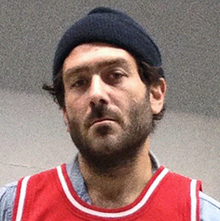

Daniel Arnold on the ethics of street photography
Prelude
Daniel Arnold is a photographer based in New York City. Though his work can now regularly be seen in places like Vogue and The New York Times, as well as in galleries, he is still perhaps best known for his much-beloved Instagram account.
Conversation
Were you always a photographer?
To be honest, I’m not totally sure. I always liked it. I think there’s just a universal appeal to it. It’s like great medicine for the absurdity of everything. It definitely took hold when I moved to New York. I was 23 and didn’t really know what the hell I was doing here and was coming from Milwaukee. The city was such a visual and cultural overload that taking photographs was just the natural response to it.
I’d been doing it sporadically and casually already, but it’s the perfect passport into early New York life. It gives you a reason to be in rooms that you want to be in, which for me was basically anywhere that looked cool. I moved here and I would stand outside of bars that I read about in the L magazine and just look in the window and think, “Yeah, someday. Someday I’ll go in there” which is so stupid looking back, obviously.
For the most part, having a camera gave me a reason to go to two or three shows a night and go stand in the front row and then it gave me an excuse the next day to contact the band and be like, “Hey, here’s a picture of you.” That was the very natural, organic first seeds of my photographic work, then it evolved into shooting my friends. There’s evidence of what has emerged I guess as a voice all the way back then. I was always looking for these weirdly quiet moments in chaos and emotional expression more than photographic expression. The evolution of my process really just involved lots of walking around and finding existing parts in the world that could tell a story that I wanted to tell. All of my trudging through the different stages of working and living here all kind of fit into a longer unintentional narrative of just learning to look at the world and not be fooled by it and to kind of fortify my place in it.
To be considered a professional photographer or referred to as an artist— to be asked to comment on photography as a whole or consider my place in it—it’s just very strange to me. To be doing this very personal, self-motivated thing in public just becomes really confusing and burdensome when it is so defined by its consumption. Honestly, I don’t care that much about what everybody else is doing. I don’t mean that in some holier than thou way, it’s just that I don’t feel like I’m contributing to some great photographic thread in some intentional way. I don’t think about that when I think about my work. I’m just having my little life and trying to spend my time on something that feels valuable to me. Being contextualized and compared and rated can be a sickening lens for your own experience.

People came to know your work largely as a street photographer. Do you still get referred to as such?
Well, it’s funny. I think that it has kind of split off from that lately. At least, that’s what I hear from other street photographers. There’s a whole vocal faction of self-proclaimed street photographers who think I’m some hack, hipster, snapshot bullshit artist, which is great. That’s what I’m told anyway, no one has said that to me personally. I think that I’ve gotten pushed more in an “art photography” category lately, but most of what I do still happens in the street more or less.
What I often think when I see your images is, “I wonder what happened immediately after this photo was taken?” You manage to catch people in these very weird intimate moments and often they are looking directly at the camera. When you snap a picture of someone on the street do they generally just look at you and keep walking? It must take a certain amount of nerve to do this kind of photography because people must get upset with you a lot of the time.
The truth is that, although there are some exceptions to this, most of the time when I decide I’m going to press the button and take the risk, I don’t necessarily have some specific vision of a composition or a beautiful photograph. It’s really an emotional reaction. A lot of the time there’s all this unintended miraculous stuff in a space where I just had this gut instinct like, “The right things are here.” In a split second analysis there’s enough going on here that it’s worth firing into this area.

The question of ballsiness is really funny because I’m so not ballsy. There are a lot of guys who go out and pride themselves on being tough and getting into arguments and they’ll yell back at people when they get yelled at. Nobody cared about or looked at anything I did until I was like 35 years old, and that was about 15 years into living here. I always wanted to take those kinds of pictures, I always wanted to be able to do it… but it took me a while to do it. I didn’t always have the nerve.
I still get freaked out all the time. It still makes my heart pound uncontrollably and makes my body shrivel up half the time. It’s scary as hell. It’s also just something you get used to. I’ve had “the conversation” now so many times. Yesterday I had it probably seven times where I stopped and had long talks with people—from angry ladies in fur coats to the guy who stands outside the methadone clinic with a bow in his hair and dances—about what I was doing taking their photo. I like having that conversation.
How does that conversation usually go?
Well, it starts out very hostile. “What the fuck are you doing? Why are you taking my picture?” That kind of thing. Sometimes it’s more curious, but usually very hostile. I don’t return the hostility. I’m not hostile. I think my intentions are good. I’m eager to talk to people. Usually, it defuses pretty quickly. A lot of the time everybody’s first response is, “Delete the picture.” I’m like, “I can’t delete the picture because it’s not a digital camera.” That takes a lot of explaining sometimes.
All you really have to offer is yourself as a filter on the world—your specific accumulation of experiences and biases and phobias and all that shit.
I have a few different avenues for dealing with this situation, but the main thing is that I tell them the truth. I try to be very calm and honest that I have this fetish about New York and that you in this moment, with these city surroundings, just look like New York to me. I tell them that I do this every day and to please take it as a compliment. I’m not always very eloquent about it because I’m usually in varying states of mental exhaustion.
I’m used to having the conversation. It goes differently all the time. There are times when I have to talk people out of beating the shit out of me and it sometimes takes a long time. There are people that seem like they really want to hurt somebody and after I take their photo that somebody they want to hurt is me. But so far it hasn’t happened.

Your images never strike me as mean spirited, but obviously the ethics involved with taking photos of people without their permission are very complicated. There’s also a fine line between capturing an amazing moment of humanness and potentially mocking someone. Even if cruelty isn’t your intent, you don’t necessarily have control over the way the image will be read or perceived. There must be times where you question whether or not you should delete an image for those very reasons.
Yeah. That’s such tricky territory. It’s kind of an unanswerable question. What makes something good and what makes something ethical? I think in this case usually the only answer is the viewer and every viewer is going to interpret things differently. It’s so subjective and so hard to sort out. I don’t know.
I took a picture yesterday of a quadriplegic person. Actually, I don’t know what his condition was necessarily but he had a tube coming out of his mouth and his face was all slack and he was a very profoundly disabled man. He was being lifted into one of those horse-drawn Central Park carriages by the carriage captain and a woman who I think was his mother. I realize that it is a problematic picture. It’s definitely questionable.
To me, it was such a lovely thing to think beyond. To think about the before and the after of that moment and to consider that guy’s experience and what a tiny, tiny simple thing humanity is. Obviously I didn’t have that complex of a thought in the moment but I’ve been having that thought process for so long that it just kind of clicks when I see those kinds things happening in front of me and I respond to that. I’m so glad that I have that picture.
When I took that picture the guy managed to make eye contact with me. Not at the camera. The camera was down at my waist. He looked me right in the eye as it happened. That’s another very subjective thing. Maybe that look was a fuck you. I don’t know what he was thinking and I don’t know what he thought my intention was. To me, the whole thing was so vulnerable and beautiful and universal. Universal in such a very specific way. I understand other people might not see it that way.
There’s just no way out of this question. It’s a very tricky one. I am extremely biased obviously because I know what’s in my heart and in my mind when I’m doing what I do. I think if that could be transparent nobody would find fault with it. Although, people love finding fault these days.

You have a very popular Instagram account. How do you decide what to share? And have you become more careful—or calculated—about what part of yourself or what part of your work you let the world see now?
No. No. There’s nothing really calculated about it. It’s not really at all to my credit, it’s just the nature of Instagram. It’s just the nature of addiction, basically. Instagram is a very weird, maybe nefarious, force, especially as it relates to what ends up being a pretty lonely lifestyle. If you’re going on their schedule and wanting to do meaningful quality work that reflects you, there’s not really time for anything else. There’s just this endless appetite for whatever you have to feed it. I wish I was more calculated about it. I often have fantasies about abandoning the whole thing. I have fantasies of getting a desk job and doing this work in obscurity and leaving it behind, or maybe continuing to do it just as obsessively but not on such a large stage.
I’m really lucky in that lately my job has mostly been, “Here’s an event, here’s a concept, here’s a theme. Go do what you do with it. Go find your project in our content.” Which is the greatest because I get to erase the lines between personal work and hired work. I’ll get hired to photograph events, but in my own style, so it’s like, “We like what you do. How about you do that thing in this impossible to enter room that’s just loaded with material that you can never have access to otherwise and we’ll pay you.”
How does it feel to do your style of photography in a room filled with famous people?
In the celebrity-filled rooms, especially when there’s a lot of photographers, it’s the greatest. I’m totally invisible and above reproach. I can get away with anything. Although they expect to be photographed, they don’t expect to be photographed the way that I’m photographing them. There isn’t really time for them to object because somebody comes right after me and grabs them by the shoulders and pushes them next to somebody else and says, “Smile”.
Those rooms surprisingly, of all the challenges, are kind of the most straightforward and the most fun. It’s just material for days. Every face in those rooms has all this baggage attached and it’s just great storytelling. On the other hand, I was in Coney Island for New Year’s Eve and I was supposed to be in Brighton Beach shooting some glitzy Russian supper club, but they wouldn’t let me in. I assume because it’s all mobsters and they were suspicious of me. I ended up with the consolation prize of the Coney Island boardwalk on New Year’s Eve, which was an interesting mix of people who were also suspicious of having their picture taken. It’s also just kind of decentralized and hard to find the stories and hard to know what’s worth taking away when you are out in this big, open space. The higher privilege rooms kind of make the story more apparent.
There is a lot of talk about how basically because of cell phones and Instagram and easy to use photo filters, everyone fancies themselves a photographer now. What, if anything, do you think that means for photography as an art form?
I don’t know. I think that the whole ‘everybody is a photographer’ thing is kind of pointless. Who cares? Everybody has been doing everything forever. Everybody can make a hot dog. You still go to a restaurant.
The processing and classification of heartfelt creative work makes it so hard to see what the work really is, which is the sustained effort of a person’s life. I think that the fact that there are better and easier and more accessible tools is a good thing. If that helps more people find a thing to put their energy into, great. I think the fact that everybody can now do something doesn’t mean that there’s nothing left to be said. I think that, if anything, it becomes an even more universal language and has more of an audience because the mystique is gone. Nobody sees a camera and is like, “How the hell did they do that?” Everyone knows.
The processing and classification of heartfelt creative work makes it so hard to see what the work really is, which is the sustained effort of a person’s life.
Do people ask you for practical advice about taking photos?
I get a funny range of advice requests. I get a lot. Mostly I get people who read an article about me selling my prints on Instagram. They want to know how they can make money. I have no answer for that. I’ve stopped even replying because I don’t know. That’s a total misunderstanding of anything that I’ve done.
There are also a lot of gear questions. What camera are you using? What flash are you using? What film are you using? Which, again, feel like the wrong questions. To anybody who takes the time to actually ask for some kind of honest feedback—”Look at my photos and tell me what you think and tell me what you think I should do”—my advice is almost always to stop trying to take good pictures and to stop thinking about photography and to get a disposable camera and to shoot a roll without looking through the viewfinder.
I think the first step to making good work is just investing beyond something structured and defined and conscious and cultural. At least in the way that I do it there’s so much letting go built into my everyday way of working. There’s so many missed shots. There’s so many botched opportunities. There’s so many technical fuckups. I feel like that’s the most valuable place to start. You don’t need to make something beautiful and technical and perfect. All you really have to offer is yourself as a filter on the world—your specific accumulation of experiences and biases and phobias and all that shit. If you can present a freewheeling, un-self-conscious, view of your experience of the world then that’s what you have to offer, and that’s good… Otherwise, you’re just rehashing old ideas and, usually, other people’s ideas. That’s the only advice I really ever have to give.
I don’t know. I don’t know what it’s worth. I don’t know if there’s a purpose to any of this work. Certainly, there’s a great argument to be made that walking around the street all day looking at things and pressing a button is a stupid use of my life, but my life doesn’t feel stupid. It feels full.
Do you always make space in your day to go out with a camera? When you leave the house do you always have a camera on you?
Always. Yeah. It’s not even about making a space at this point. I am the space. I don’t mean that dramatically. It sounds so interview-y. It’s just like how I look at things. It’s how I think, involuntarily. I dream about it. It’s just like my organizing purpose. It’s great because it doesn’t really rule out any other experience. It’s not an interfering purpose. If anything, it’s an expanding purpose because it gives me a reason to push myself and to go where I’m uncomfortable.
There is a common complaint that our contemporary need to document everything—to take a picture of the show instead of simply watching the show—actually keeps us from ever being in the moment. For you, does being in the moment mean taking a picture?
At this point, being in the moment means taking a picture. That’s a tough one. I think that that would be an interesting question to ask the people who have been in my life throughout this experience. I am vaguely peripherally aware of the decay of my interpersonal skills, which used to be top notch. I used to feel great in any room, totally comfortable all the time, and I’ve definitely… maybe it’s just an aging thing? I don’t know. I’ve definitely deteriorated as a social being.
I think that my life, my personal moments, are enriched by the camera. Even if I happen to not have a camera on me I still have a phone, so there’s always something. Sometimes the phone is dead and my camera is out of film and I can’t take a picture. Those moments are when everything suddenly lights up and is perfect and I am a failure everywhere I look. That’s always the moment when the perfect moment presents itself—when it’s impossible for you to capture it. (laughs)

I’m working on a show right now that I’m way behind on. I think it’s going to be mostly, if not all, iPhone photos. I’ve been sort of facing the impossible task of going through the archive, which has got to be hundreds of thousands of images. In doing that, I got totally sidetracked discovering that I have this giant collection of videos. I started watching the videos, which I never paid attention to because there’s no real place for them.
As this relates to being in a moment, I have videos specifically of my family, where I’ll videotape a whole conversation with my father. Yeah, maybe I would have participated 8% better if I hadn’t had the secret anxiety that I was filming him. But I also have this thing now that I can keep forever. Now I have this secret video of my dad explaining to me what “Pancho and Lefty” means in the most animated, unfiltered, Dad way. I think generally I do have more sentimental tears at the ready because of my general perspective as a photographer, which is an inclination I had anyways, but it’s just pushed into overdrive by looking at the world this way. It’s not hiding behind the camera. It’s just thinking about things. It’s just looking at time in a different way.
I think there’s this egocentric inevitability in all of these pursuits that, in some way, you’re wanting, whether you admit it or not, to throw a little paper airplane into the world after you’re in it. Ultimately the faces and names don’t matter because no one is going to know them anymore when we’re all dead. Maybe you’ll just have this time capsule proof of a human experience that could be more meaningful than a list of events and politics. Or maybe that’s just me rationalizing why I need to take pictures.
Some Things
Daniel Arnold Recommends
Sonny Sharrock — “Black Woman”Ross McElwee YouTube This Bottomless Treasure
Back to Top HTML Style Copied Style
View Original Interview